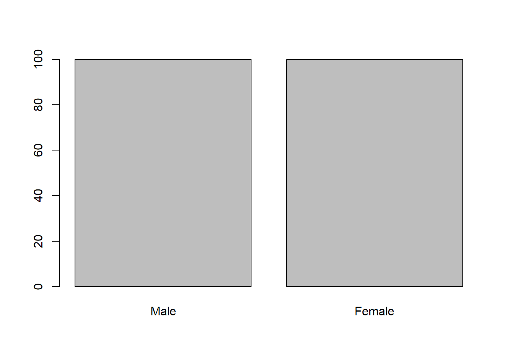

9 Wochenplan 09: Faktoren
…im Rahmen der 09. und 10.Einheit.
9.1 Lernziele
Aufbauend auf unserer bisherigen Arbeit mit Kreuztabellen besteht das Lernziel für diese Woche darin, dass Sie sich mit einem für die tägliche Arbeit mit R wichtigen Datenformat vertraut machen: Faktoren. Faktoren sind eine geeignete Art, kategoriale – d.h. nominale und ordinale – Daten in R zu repräsentieren. Der Umgang mit dieser Art von Daten ist allerdings nicht ganz leicht und erfordert ein wenig Übung.
Die folgenden konkreten Lernziele lassen sich für ein erstes Kennenlernen von Faktoren formulieren:
- Sie können dafür geeignete Variablen in Faktoren umwandeln.
- Sie verstehen den Unterschied zwischen geordneten und ungeordneten Faktoren und können beide in R erstellen.
- Sie verstehen die spezifische Zwei-Ebenen-Struktur von Faktoren und insbesondere die Rolle von “Levels.”
- Sie wissen, wie man die Levels eines Faktors definiert.
- Sie wissen, wie man Levels neu benennt, umsortiert, zusammenfasst und/oder nicht benötigte Levels entfernt.
9.2 Einführung Faktoren (Lösung Aufgaben)
Einführung: Neben Vektoren (die wir bisher vor allem mit metrischen Variablen gleichgesetzt haben) sind Faktoren ein weiterer wichtiger Objekttyp der für die Organisation von sozialwissenschaftlichen Beobachtungen in Form von Variablen relevant ist (Manderscheid 2017, 35). Dieser Objekttyp enthält nun nicht mehr die Zahlen in einer Reihe, sondern “Levels.” Sie legen eine beschränkte Auswahl an Ausprägungen fest, welche eine Variable annehmen kann. Die Levels representieren dann benannte Elemente (die Labels) und wir können diese insbesondere für Variablen mit nominalen oder ordinalen Skalenniveau verwenden. Der Unterschied zwischen numerischen Variablen/Vektoren und kategorial Variablen/Faktoren wird in R wichtig, denn zwischen den Objekttypen wird differenziert. Das heisst das gewisse Funktionen nicht mehr mit Faktoren ausgeführt werden können.
Im folgenden wird der Umgang mit Faktoren über die Möglichkeiten der Basisversion von R erläutert. Im Buch R for Data Science (Wickham and Grolemund 2016, Kap.15) wird als mögliche Vertiefung das Paket “forcats” eingeführt, das Teil des sogenannten Tidyverse ist. Es bietet eine Vielfalt an Werkzeuge für den Umgang mit kategorialen Variablen und Faktoren.
Die Frage, welche Variablen wirklich zu Faktoren umgewandelt werden sollten, ist dabei gar nicht immer so klar. Drei Beispiele: “agea,” “pdwrk” und “happy” – welche davon sollten zu Faktoren werden? Die Variable zu Alter ist ohne Zweifel eine metrische Variable und wir sollten sie als Vektor im Datensatz belassen. Die zweite Variable “pdwrk” ist hingegen klar eine nominale Variable und daher ein Faktor. Allerdings könnten wir diese eigentlich auch als numerische Variable im Datensatz belassen, da sie 0-1 kodiert ist. Solche “Dummy”-Variablen können wir in der Form oftmals in Verfahren integrieren (etwa bei Korrelationen oder Regressionen). Die Variable “happy” wiederum ist streng genommen eine ordinale Variable, und deshalb eigentlich ein Faktor. Allerdings behandeln wir Variablen mit über 5-6 Abstufungen meistens als metrische Variablen. “Happy” sollte daher als Vektor im Datensatz belassen werden.
Auch von Josias Bruder hat eine Frage zur Diskussion gestellt:
Entsprechen edulvla und eisced geordneten oder ungeordneten Faktoren? Gewissermassen stehen die einzelnen Ausbildungsstufen in einer Hierarchie, allerdings ist die Reihenfolge aufgrund des Wertes 0 (not possible to harmonise) unzulässig. Auch wirft die Bewertung von unterschiedenen Bildungslevel Fragen auf (im Sinne: was ist mehr Wert? / Besser?).
Hier bietet sich eine einfach pragmatische Antwort auf der einen und eine etwas komplexere Antwort auf der anderen Seite an. Die pragmatische Antwort würde die Variable geordnet kodieren und akzeptieren, dass wir hier gesellschaftliche Vorstellungen von “besseren” Bildungsniveaus übernehmen. Gegebenenfalls könnte die Variable in einer zweiten Weise als ungeordneter Faktor abgespeichert werden um auch die Ausprägung “0” abzubilden. Die komplexere Antwort auf die Frage wäre, dass auch eine solche anscheinende Hierarchie zu einem Forschungsgegenstand werden kann. Siehe auch hierfür die Ergebnisse folgender Studie, die feststellte, dass sich Löhne und Arbeitsmarkterfolg für verschiedene Bildungsabschlüsse weitgehend parallel entwickelt.
Trotz all dieser Schwierigkeiten können die verschiedenen Variablen wie folgt aufgeteilt werden:
- “cntry”: Charakter-Konstante
- “essround”: numerische Konstante
- “idno,” “pspwght,” “pweight,” “yrbrn,” “agea,” “eduyrs” & “wkhtot” : numerische Variablen
- “happy” & “hinctna”: ebenfalls numerische Varablen (vgl. Anmerkungen unten)
- “gndr,” “chldhm,” “pdwrk,” “edctn,” “uemp3m” & “isco08”: ungeordnete Faktoren
- “polintr,” “edulvla” & “eisced”: geordnete Faktoren
Wiederholung zu geordneten und ungeordneten Faktoren: Im folgenden wollen wir nun einige Faktoren im Datensatz definieren, etwa eine ungeordnete oder eben nominale Variable (“gndr”):
table(daten_ess$gndr)##
## 1 2
## 109 91daten_ess$gndr <- factor(daten_ess$gndr)
levels(daten_ess$gndr) <- c("Male", "Female")
table(daten_ess$gndr)##
## Male Female
## 109 91Wir können weiter auch unnötige/nicht benötigte Levels in einem (ungeordneten) Faktor entfernen (“uemp3m”):
table(daten_ess$uemp3m)##
## 1 2 7
## 38 161 1daten_ess$uemp3m <- factor(daten_ess$uemp3m)
levels(daten_ess$uemp3m) <- c("Has been unemployed", "Has never been unemployed", "Refusal", "Don't know", "No answer")
table(daten_ess$uemp3m)##
## Has been unemployed Has never been unemployed Refusal
## 38 161 1
## Don't know No answer
## 0 0#Wir sehen nun, dass einige Levels keine Ausprägungen haben. Diese können wir anschliessend wieder entfernen über 'drop':
str(daten_ess$uemp3m)## Factor w/ 5 levels "Has been unemployed",..: 2 2 2 2 2 2 2 2 2 1 ...?drop
daten_ess$uemp3m <- daten_ess$uemp3m[drop=T]
table(daten_ess$uemp3m)##
## Has been unemployed Has never been unemployed Refusal
## 38 161 1str(daten_ess$uemp3m)## Factor w/ 3 levels "Has been unemployed",..: 2 2 2 2 2 2 2 2 2 1 ...Ebenfalls können wir einen geordneten Faktoren im Datensatz definieren anhand eines Beispiels (“eisced”):
daten_ess$eisced <- factor(daten_ess$eisced, ordered = T)
levels(daten_ess$eisced) <- c("ES-ISCED I",
"ES-ISCED II",
"ES-ISCED IIIb",
"ES-ISCED IIIa",
"ES-ISCED IV",
"ES-ISCED V1",
"ES-ISCED V2")
#Eine etwas andere Überprüfung:
table(as.numeric(daten_ess$eisced), daten_ess$eisced)##
## ES-ISCED I ES-ISCED II ES-ISCED IIIb ES-ISCED IIIa ES-ISCED IV ES-ISCED V1
## 1 7 0 0 0 0 0
## 2 0 26 0 0 0 0
## 3 0 0 81 0 0 0
## 4 0 0 0 14 0 0
## 5 0 0 0 0 30 0
## 6 0 0 0 0 0 16
## 7 0 0 0 0 0 0
##
## ES-ISCED V2
## 1 0
## 2 0
## 3 0
## 4 0
## 5 0
## 6 0
## 7 24Als Hinweis: Für solche (Kreuz-)Tabellen zur Überprüfung bietet sich die einfache table()-Funktion an. Natürlich kann auch CrossTable() des Paketes “gmodels” genutzt werden – die Funktion scheint aber etwas zu komplex hierfür zu sein.
Die Variable “polintr” als weiterer geordneter Faktor stellt uns vor ein Problem, da die Ausprägung “1” (und nicht etwa “4”) dem höchsten Wert entspricht:
table(daten_ess$polintr)##
## 1 2 3 4
## 36 77 64 23daten_ess$polintr_v1 <- factor(daten_ess$polintr, ordered = T)
levels(daten_ess$polintr_v1) <- c("Very interested",
"Quite interested",
"Hardly interested",
"Not at all interested")
# So scheint die Reihenfolge noch nicht zu stimmen:
str(daten_ess$polintr_v1)## Ord.factor w/ 4 levels "Very interested"<..: 2 2 4 3 3 4 3 2 3 4 ...# Und diese Lösung scheint nur fehlende Werte zu ergeben?
daten_ess$polintr_v1 <- ordered(daten_ess$polintr,
levels = c("Not at all interested",
"Hardly interested",
"Quite interested",
"Very interested"))
str(daten_ess$polintr_v1)## Ord.factor w/ 4 levels "Not at all interested"<..: NA NA NA NA NA NA NA NA NA NA ...# Wir müssen also einen Umgang machen:
daten_ess$polintr_v2 <- factor(daten_ess$polintr,
levels =c(4,3,2,1),
ordered = T)
str(daten_ess$polintr_v2)## Ord.factor w/ 4 levels "4"<"3"<"2"<"1": 3 3 1 2 2 1 2 3 2 1 ...levels(daten_ess$polintr_v2) <- c("Not at all interested", "Hardly interested",
"Quite interested", "Very interested")
str(daten_ess$polintr_v2)## Ord.factor w/ 4 levels "Not at all interested"<..: 3 3 1 2 2 1 2 3 2 1 ...table(daten_ess$polintr_v2)##
## Not at all interested Hardly interested Quite interested
## 23 64 77
## Very interested
## 36Die Levels scheinen also auch direkt in der factor()-Funktion integrierbar zu sein. Lässt sich dies auch bei einer anderen (ungeordneten) Faktorvariable übernehmen (“chldhm”)?
#chldhm
table(daten_ess$chldhm)##
## 1 2
## 73 127daten_ess$chldhm_v1 <- factor(daten_ess$chldhm,
levels = c("Respondent lives with children at household grid",
"Does not", "Not available"))
table(daten_ess$chldhm_v1)##
## Respondent lives with children at household grid
## 0
## Does not
## 0
## Not available
## 0daten_ess$chldhm_v2 <- factor(daten_ess$chldhm,
levels = c("Respondent lives with children at household grid",
"Does not"))
table(daten_ess$chldhm_v2)##
## Respondent lives with children at household grid
## 0
## Does not
## 0Dies scheint nicht zu funktionieren. Was könnte hier nun das Problem gewesen sein? Für ein besseres Verständnis von Faktoren ist es lohnenswert, sich die Unterscheidung von Levels und Labels zu vergegenwärtigen (vgl. auch hier).
Levels und Labels: Die Levels definieren, was in einem Faktor “reingehen” kann, also was von diesem als gültiges Datum angesehen wird. Die Labels bestimmen, was anschliessend vom Faktor ausgegeben wird. Wenn wir aber im Code die Definition des Faktors und die Definition von dessen Levels trennen, ignorieren wir diese Unterscheidung:
daten_ess$chldhm <- factor(daten_ess$chldhm)
levels(daten_ess$chldhm) <- c("Respondent lives with children at household grid",
"Does not", "Not available")
daten_ess$chldhm <- daten_ess$chldhm[drop=T]
table(daten_ess$chldhm)##
## Respondent lives with children at household grid
## 73
## Does not
## 127Wir können uns den Unterschied vergegenwärtigen, hier am Beispiel einer weiteren, ungeordneten kategorialen Variable (“pdwrk”):
table(daten_ess$pdwrk)##
## 0 1
## 74 126#Hier kodieren wir die Variable zu einem Charakterformat um und bauen einen Schreibfehler ein:
daten_ess$pdwrk[daten_ess$pdwrk==0] <- "not marked"
daten_ess$pdwrk[daten_ess$pdwrk==1] <- "marked"
daten_ess$pdwrk[18] <- "markwd"
class(daten_ess$pdwrk)## [1] "character"table(daten_ess$pdwrk)##
## marked markwd not marked
## 126 1 73#Anschliessend definieren wir die Variable als Faktor und bestimmen ihre Levels:
daten_ess$pdwrk <- factor(daten_ess$pdwrk,
levels = c("not marked", "marked"))
table(daten_ess$pdwrk)##
## not marked marked
## 73 126#Unser Schreibfehler wurde daher nicht akzeptiert ("er geht nicht in die Varialbe rein"):
which(is.na(daten_ess$pdwrk))## [1] 18# Jetzt definieren wir in einem zweiten Schritt die Labels:
daten_ess$pdwrk <- factor(factor(daten_ess$pdwrk),
labels = c("no paidwork for the last 7", "has been doing paid work"))
table(daten_ess$pdwrk)##
## no paidwork for the last 7 has been doing paid work
## 73 126Diese Unterscheidung können wir nun gleichzeitig nutzen, etwa bei ungeordneten Faktoren (“edctn”):
table(daten_ess$edctn)##
## 0 1
## 178 22daten_ess$edctn <- factor(daten_ess$edctn,
levels = c(0,1),
labels = c("Not marked", "Marked"))
table(daten_ess$edctn)##
## Not marked Marked
## 178 22Ebenfalls können wir diesen Unterschied zwischen Levels und Labels nutzen, um fehlende Werte direkt auszuschliessend, etwa bei folgenden geordneten Faktor (“edulvla”):
table(daten_ess$edulvla)##
## 1 2 3 4 5
## 7 26 95 4 66daten_ess$edulvla <- factor(daten_ess$edulvla,
levels = c(1,2,3,4,5),
labels = c("ISCED 0-1",
"ISCED 2",
"ISCED 3",
"ISCED 4",
"ISCED 5-6"),
ordered = T)
table(daten_ess$edulvla)##
## ISCED 0-1 ISCED 2 ISCED 3 ISCED 4 ISCED 5-6
## 7 26 95 4 66str(daten_ess$edulvla)## Ord.factor w/ 5 levels "ISCED 0-1"<"ISCED 2"<..: 3 5 2 3 3 3 3 3 3 3 ...summary(daten_ess$edulvla)## ISCED 0-1 ISCED 2 ISCED 3 ISCED 4 ISCED 5-6 NA's
## 7 26 95 4 66 2Als Hinweis: Da die Variable “edulvla” als geordneter Faktor definiert wird, wurde auch die Ausprägung “Other” (55) ausgeschlossen. Diese könnte als gültige Ausprägung integriert werden, wenn die Variable als ungeordnet-kategorial/nominal definiert würde.
Nicht zuletzt hilft uns die Unterscheidungen von Levels und Labels bei dem komplizierten Fall der Variable “polintr”:
table(daten_ess$polintr)##
## 1 2 3 4
## 36 77 64 23daten_ess$polintr <- factor(daten_ess$polintr,
levels = c(4,3,2,1),
labels = c("Not at all interested",
"Hardly interested",
"Quite interested",
"Very interested"),
ordered = T)
str(daten_ess$polintr)## Ord.factor w/ 4 levels "Not at all interested"<..: 3 3 1 2 2 1 2 3 2 1 ...table(daten_ess$polintr)##
## Not at all interested Hardly interested Quite interested
## 23 64 77
## Very interested
## 36Eine kleine Aufgabe: Wir können uns den Unterschied zwischen Levels und Labels auch nochmals an einer kleinen Aufgabe verdeutlichen. Versuchen Sie aus den beiden Variablen “edctn” und “pdwrk” eine neue Variable “beschaeft” zu erstellen.
table(daten_ess$edctn, daten_ess$pdwrk)##
## no paidwork for the last 7 has been doing paid work
## Not marked 55 122
## Marked 18 4Erstellen Sie zuerst einen Charakter-Vektor für die neue Variable, bevor Sie diese zu einem Faktor umwandeln. Versuchen Sie dann die Trennung zwischen Levels und Labels zu beachten. Arbeiten Sie mit folgendes Levels… * working * eduction * both * none …und mit beliebigen Labels.
daten_ess$beschaeft <- 0 #da anschliessend Levels definiert werden können wir hier irgdeinen Wert einfügen.
daten_ess$beschaeft[daten_ess$pdwrk=="has been doing paid work"] <- "working"
daten_ess$beschaeft[daten_ess$edctn=="Marked"] <- "eduction"
daten_ess$beschaeft[daten_ess$pdwrk=="has been doing paid work" &
daten_ess$edctn=="Marked"] <- "both"
daten_ess$beschaeft[daten_ess$pdwrk!="has been doing paid work" &
daten_ess$edctn!="Marked"] <- "none"
table(daten_ess$beschaeft)##
## 0 both eduction none working
## 1 4 18 55 122class(daten_ess$beschaeft)## [1] "character"daten_ess$beschaeft <- factor(daten_ess$beschaeft,
levels = c("working",
"eduction",
"both",
"none"))
table(daten_ess$beschaeft)##
## working eduction both none
## 122 18 4 55daten_ess$beschaeft <- factor(daten_ess$beschaeft,
levels = c("working",
"eduction",
"both",
"none"),
labels = c("Arbeitende Person",
"Person in Ausbildung",
"Arbeit und Ausbildung",
"Weder Arbeit noch Ausbildung"))
table(daten_ess$beschaeft)##
## Arbeitende Person Person in Ausbildung
## 122 18
## Arbeit und Ausbildung Weder Arbeit noch Ausbildung
## 4 55Integration ins Skript zur Datenaufbereitung: Mit diesem Bewusstsein für Levels und Labels können wir alle kategorialen Variablen im Datensatz jeweils über einen Befehl definieren. Dieses Vorgehen wird dann Datenaufbereitungsskript integriert. Hier ein Vorschlag:
# Faktoren definieren
## ungeordnete Faktoren
daten_ess$gndr <- factor(daten_ess$gndr,
levels = c(1,2),
labels = c("Male", "Female"))
daten_ess$chldhm <- factor(daten_ess$chldhm,
levels = c(0,1),
labels = c("Respondent lives with children at household grid",
"Does not"))
daten_ess$pdwrk <- factor(daten_ess$pdwrk,
levels = c(1,2),
labels = c("Not marked",
"Marked"))
daten_ess$edctn <- factor(daten_ess$edctn,
levels = c(1,2),
labels = c("Not marked",
"Marked"))
daten_ess$uemp3m <- factor(daten_ess$uemp3m,
levels = c(1,2,7,8),
labels = c("Yes", "No",
"Refusal", "Don't know"))
## geordnete Faktoren
daten_ess$polintr <- factor(daten_ess$polintr,
levels = c(4,3,2,1),
labels = c("Not at all interested",
"Hardly interested",
"Quite interested",
"Very interested"),
ordered = T)
daten_ess$edulvla <- factor(daten_ess$edulvla,
levels = c(1,2,3,4,5),
labels = c("ISCED 0-1",
"ISCED 2",
"ISCED 3",
"ISCED 4",
"ISCED 5-6"),
ordered = T)
daten_ess$eisced <- factor(daten_ess$eisced,
levels = c(0,1,2,3,4,5,6,7),
labels = c("Not possible to harmonise into ES-ISCED",
"ES-ISCED I",
"ES-ISCED II",
"ES-ISCED IIIb",
"ES-ISCED IIIa",
"ES-ISCED IV",
"ES-ISCED V1",
"ES-ISCED V2"),
ordered = T)Zur Überprüfung kann wie in der letzten Aufgabenstellung formuliert zuerst die Environment (und alle Objekte) gelöscht werden. Dies geht mit folgender Funktion:
rm(list = ls())Anschliessend kann der mittels source() der Datensatz neu geladen werden und – als Test – eine als Faktor definierte Variable aufgerufen werden:
source(file = "Daten/ess_import.R")
plot(daten_ess$gndr)